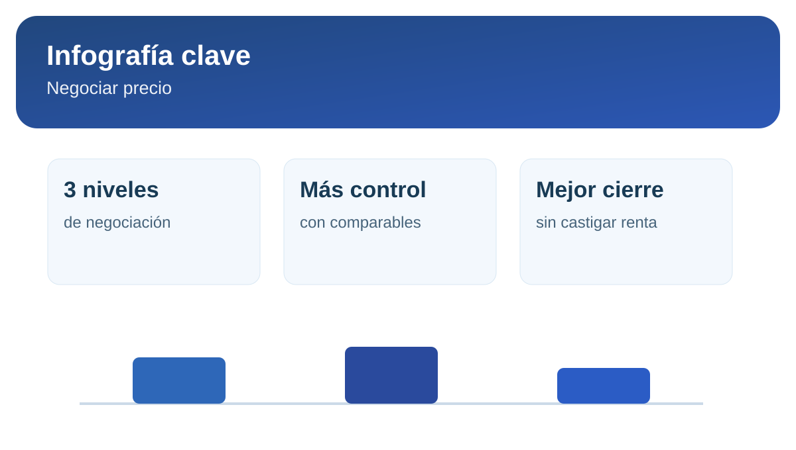

Cómo negociar el precio sin perder velocidad de cierre
Negociar no es bajar precio por presión. Es construir un acuerdo que mantenga tu rentabilidad y, al mismo tiempo, permita cerrar rápido con un inquilino que cumpla.
1. Llega a la negociación con un marco definido
Antes de publicar, define tres niveles: precio objetivo, precio negociable y piso mínimo. Cuando ese marco está claro, reduces decisiones emocionales en la etapa más sensible del proceso.
2. Cambia la conversación: de descuento a valor
- Entrega inicial más ordenada y checklist de estado del inmueble.
- Condiciones de ingreso transparentes y fechas claras.
- Respaldo de gestión para mantenimiento y seguimiento de pagos.
3. Negocia con datos, no con percepción
Usa comparables reales de tu zona y evidencia de demanda. Con eso puedes explicar por qué tu precio es consistente para el mercado y evitar rebajas sin sustento.
Infografía rápida: negociación inteligente

4. Marca plazos de decisión para no enfriar el proceso
Una negociación abierta por demasiados días suele deteriorar la probabilidad de cierre. Define ventanas cortas para respuesta y siguientes pasos, manteniendo una comunicación firme y profesional.
Calcula un rango de salida con criterio comercial antes de negociar.
Validar precio recomendado